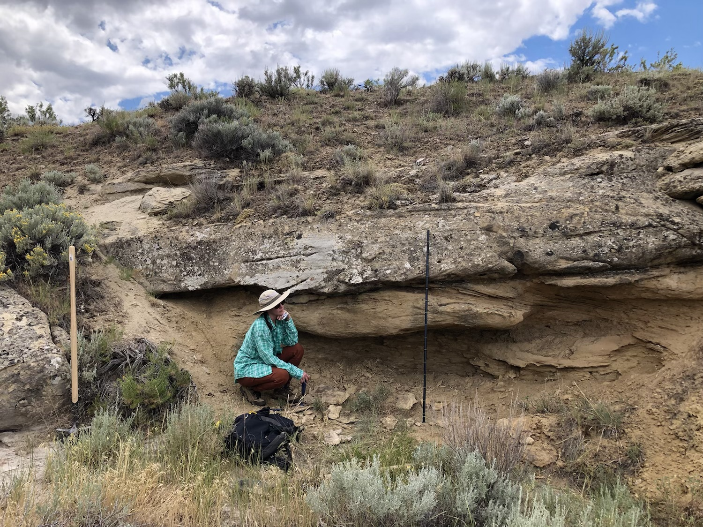
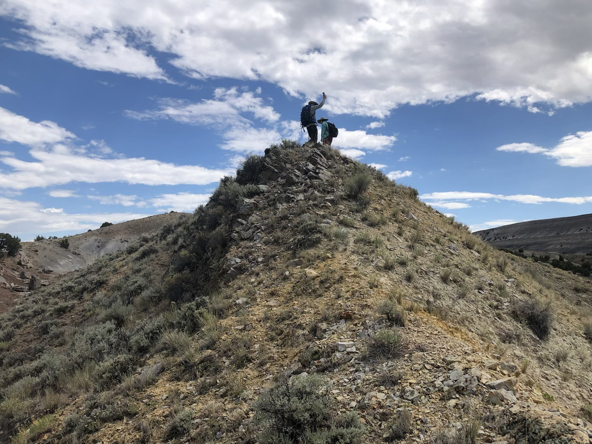
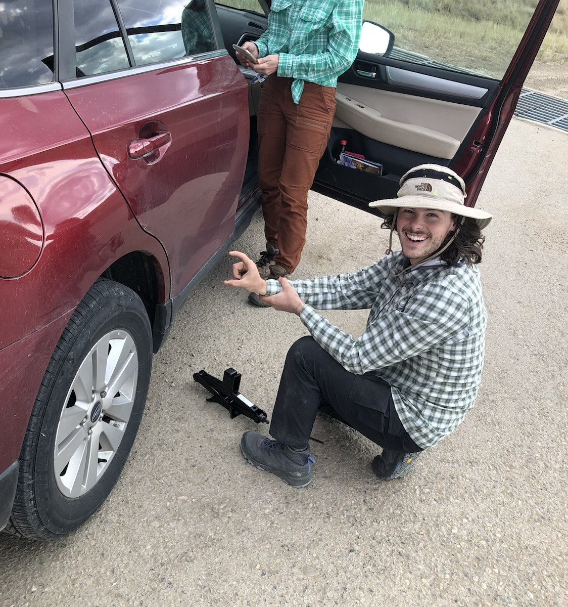

2021 Dispatch from the field #2
We spent the first morning gathering supplies and dealing with some emails. In Worland we visited with Mike Bies while we filled up our water jugs for camp. Mike showed me some plant-bearing layers in the Cloverly Formation back in 2010, very near where we are collecting this summer, so it was good to catch up.
When we got back to camp, we discovered there had been very strong winds, and my relatively new tent didn't survive. The poles were bent and one snapped, ripping a hole through the rain fly. So, we drove back into town to a storage unit where we could borrow a tent from my former advisor. We managed to have dinner and get the replacement tent up before sundown.

Because we couldn't check in with the BLM office until Monday, we decided that on Sunday we'd visit an outcrop of the Cloverly that I hadn't been to before. We looked for new plant sites that I may explore in the future with another permit. The drive to the outcrop provided some spectacular views of the basin, but the hike from the car was nearly a mile down into a valley.

We found some sites with plant debris and sediment that I hope will yield well-preserved fossil pollen, but no luck finding well-preserved fossil leaves this time. I suspect with more time and the appropriate permit to dig bigger quarries we would find some. Nonetheless, it was a successful first day in the field.


It was sunny, windy, and in the low 80s when we began the hike out of the valley and back to the car. The drive back to the highway was 6–7 miles, but once we got to the highway, a low-pressure warning for one of the tires came on. We pulled off to check it, and Ben found a three-inch nail sticking out of the side of the tire. I suspect it was from road construction and not the 7 miles of dirt. We changed the tire just as a small rainstorm passed nearby and limped back to camp on the spare, certain no tire shops would be open at 6:30 on a Sunday night in Worland, Wyoming. We decided we'd deal with it in the morning.

Monday we got the new tire and checked in with the BLM in Worland. This took most of the day. In the late afternoon we drove around exploring outcrops and planning where to go on Tuesday. We identified some promising sites and then headed back to camp.
Tuesday we walked out another outcrop of the Cloverly Formation that I had not checked carefully before. After about 2 miles of slow walking and checking for plant fossils, we finally found the layer with plants that I expected to find. I took some strike and dip measurements (the direction and angle of the tilted rock layers), and it became clear that for most of the hike our target layer for plants was underground. We collected some specimens and measured the thickness of the plant-bearing layer. Then we began the long walk back to the car in the 90-degree heat. After all that walking, we decided that dinner at Sacketts Fork Pizza in Ten Sleep, Wyoming, would hit the spot.